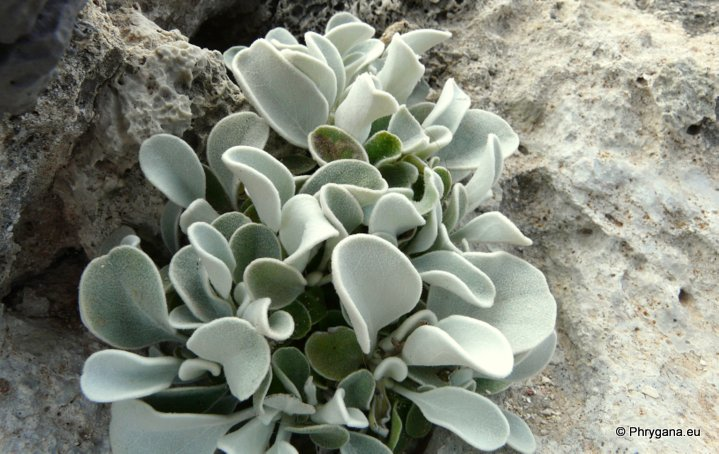
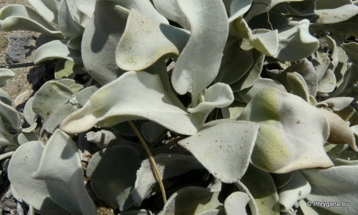
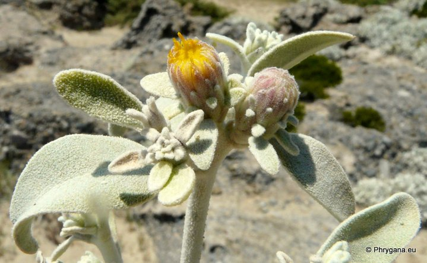
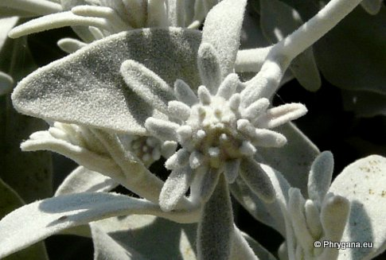
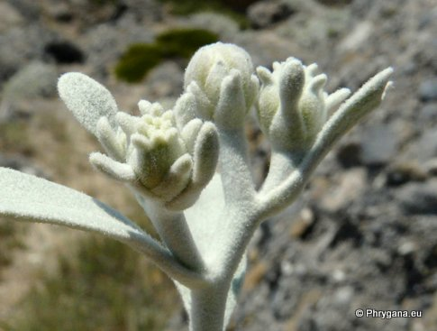
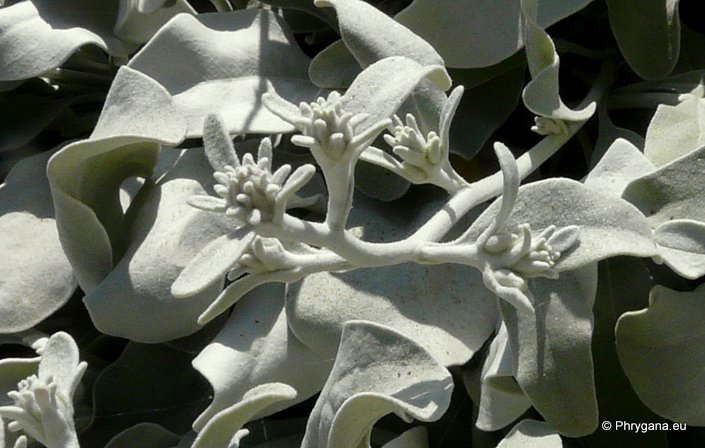
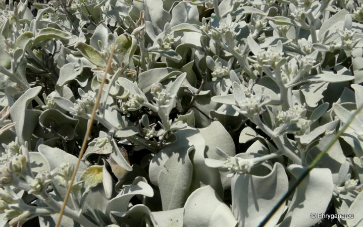

| PHRYGANA | Fauna | Flora | Galles | liste des espèces |
contact -
info - commentaires phrygana1 (at) gmail.com |
| Particularités crétoises | nouveautés | Mines | ressources naturelles |
| Inula candida (L.) CASS. |
| 460 | Flora | ASTERACEAE | Inuleae | Inula L.. |
|
 Inula candida Gramvousa (Balos bay) 11 mai 2012 |
| Synonyme: Inula limoniifolia (SM.) BOISS. | |
| Plante très poilue, à poils serrés | |
| Feuilles: entières, lancéolées, arrondie au sommet, (25-90 mm) sans nervures apparentes | |
| Tige épaisse, couchée-ascendante | |
| Fleurs: capitules petits (7-12 mm), généralement solitaires; fleurs jaunes, très petites; bractées arrondies au sommet, très recourbées vers l'extérieur | |
| Hauteur: 150 - 400 mm | Type biologique: chaméphyte ramifié |
| Floraison: (mai-) juin juillet | |
| Altitudes: 0 - 900 m | |
| Statut en Crète: indigène endémique | |
| Biotopes en Crète: falaises côtières | |
| Distribution: Crète, Grèce (sud du Péloponnèse), Cythère | |
|
 Inula candida Falasarna 14 mai 2012 |
|
 Inula candida Falasarna 14 mai 2012 |
|

 Inula candida Falasarna 14 mai 2012 |
|
 Inula candida Falasarna 14 mai 2012 |
|
 Inula candida Falasarna 14 mai 2012 |
| 20 juin 2013 |
| © paul fontaine -- © Phrygana.eu 2007 -- 2013 |